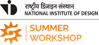
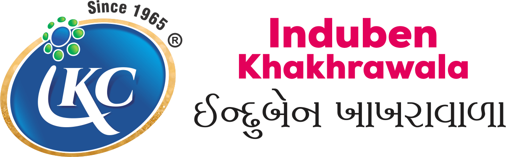

My design education spans strategic design management and communication design.
One taught me to ask better questions, the other taught me to give them a shape. These days they don't take turns. They work together, quietly, on everything I touch.


{{ v.back }}